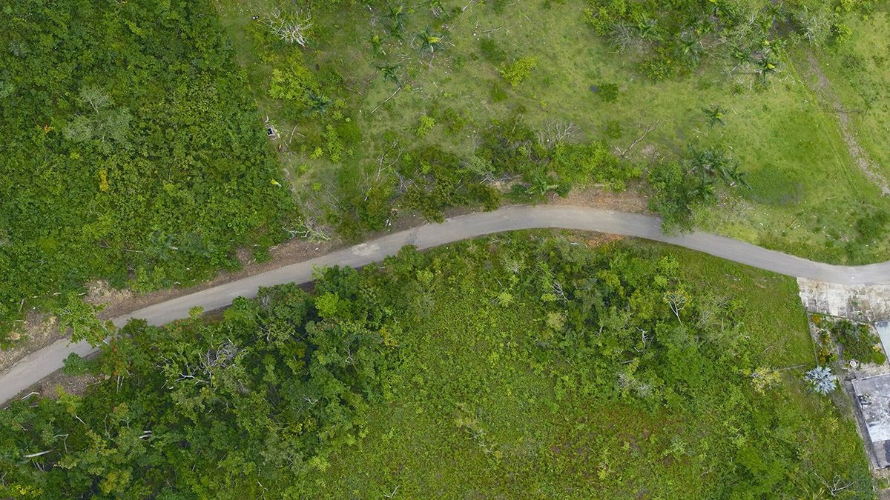
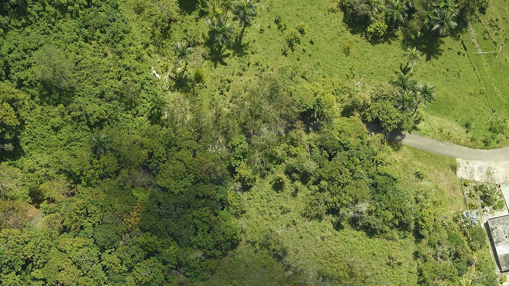

Un satélite casi nunca ve exactamente hacia abajo
Cuando un sensor observa un punto que no está justo debajo de él (fuera del nadir), los objetos altos —edificios, torres, árboles— parecen "recostarse" hacia el borde de la imagen. Entre más alto el objeto y mayor el ángulo, mayor el corrimiento aparente.
No existe un mapa plano sin trampa
La Tierra es (casi) una esfera; un mapa es plano. Pasar de una a otro siempre sacrifica algo: área, forma, distancia o dirección. Los círculos de abajo miden lo mismo en la superficie real — observa cómo cada proyección los deforma distinto según dónde estén.
El patrón del suelo cuenta la historia de cómo creció una ciudad
Antes de escribir una sola línea de código para tu proyecto, es útil entrenar el ojo: la forma, densidad y regularidad de lo construido dice mucho sobre cómo (y con qué planeación) se desarrolló una zona. Selecciona cada tipo de zona para ver qué lo delata en una imagen satelital.
El mismo bosque, antes y después de un huracán
Una sola imagen satelital es una fotografía; una serie de imágenes en el tiempo es una historia. Arrastra la línea para comparar el dosel de un bosque en Puerto Rico dañado por el huracán María frente a su estado actual.


Herramientas y lecturas externas
Sitios didácticos (en su mayoría en inglés) para profundizar en cada tema por tu cuenta.
The True Size Of…
Arrastra países por el mapa y compara su tamaño real — ideal para ver la distorsión de Mercator en acción.
Map Projection Transitions (Jason Davies)
Animación que transforma un mapamundi entre más de 50 proyecciones distintas, en tiempo real.
Projection Wizard
Herramienta que sugiere la proyección más adecuada según el área que quieras mapear y qué propiedad te importa preservar.
NASA · Images of Change
Galería de pares de imágenes satelitales "antes / después" de NASA, con control deslizante para comparar años.
NASA Earth Observatory · Daño del huracán María a los bosques de Puerto Rico
Artículo de origen de las fotografías aéreas usadas en el comparador antes/después de esta página.
Google Earth Engine Timelapse
Video interactivo y navegable del planeta completo, año por año, de 1984 a la actualidad.
European Space Imaging: Off-Nadir Angle
Explicación técnica (en inglés) de cómo el ángulo de observación afecta la geometría y nitidez de una imagen satelital.
Dashboard: vulnerabilidad al cambio climático (CEDO)
Panel interactivo de consultoría sobre vulnerabilidad de comunidades/pesquerías del Golfo de California ante el cambio climático — un ejemplo real de cómo estos análisis terminan en una herramienta que alguien más puede explorar.
Dashboard adicional (CEDO)
Segundo panel de datos desarrollado para consultoría en CEDO Intercultural.
Ponte a prueba
Preguntas rápidas sobre distorsión, proyecciones y planeación urbana.